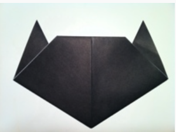

BY CLICKING ON "MY GIT HUB PAGE" YOU CAN GET AMAZING PROJECTS MADE BY ME
1: Start with a square piece of origami paper.
If you only have regular 8.5x11 paper,
follow these instructions to make a square sheet.
2: Fold paper in half by folding the bottom corner to top corner.
3: Fold in half again by folding left corner to right corner.
4: Unfold it.
5: Form the ears by folding the left and right corners
of the triangle up at an angle, like what you see in the picture.
6: Fold a portion of the top corner down.
7: Turn the figure over.
8: Draw some eyes and whiskers!